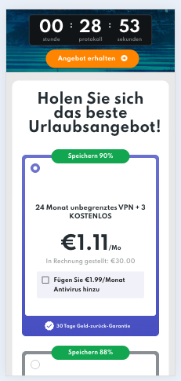
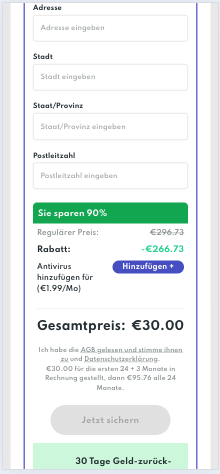
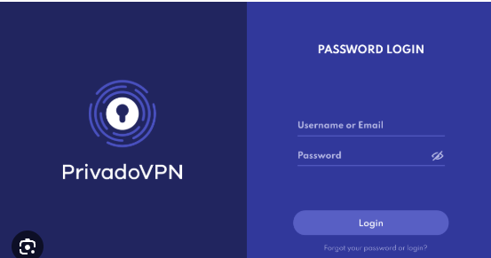
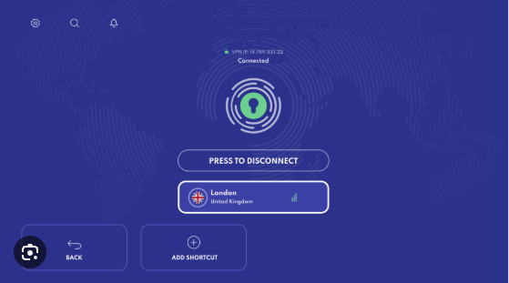

1) PrivadoVPN kaufen (Handy)
Am einfachsten direkt am Handy kaufen – danach kommen die Zugangsdaten per E-Mail.
-
Link öffnen:
https://privadovpn.com/getprivadovpn/ - Plan wählen: 24 Monate (meist ca. 30€)
- Bezahlen
Tipp: Nimm den 24-Monate-Plan – bestes Preis-Leistungs-Verhältnis.

Plan auswählen (Handy)

24 Monate auswählen
2) Nach der Zahlung: Zugangsdaten kommen per E-Mail
Du bekommst in der Regel Benutzername und Passwort per Mail.
- Öffne dein E-Mail Postfach
- Suche nach „Privado“ (oder „PrivadoVPN“)
- Notiere dir Username + Password
Wichtig: Nicht verwechseln:
Du brauchst die Login-Daten aus der E-Mail (nicht irgendein App-Store Passwort).

E-Mail mit Username/Password.
3) Auf dem Stick: PrivadoVPN installieren
Das ist der Teil, den fast jeder hinbekommt – wenn man exakt so vorgeht.
1
Suche öffnen
Auf dem Fire TV Stick oben auf die Lupe (Suche).
2
„Privado“ tippen
Tippe Privado ein und wähle PrivadoVPN aus.
3
Download & Install
Auf Herunterladen / Installieren klicken.
4
App öffnen
Nach der Installation: Öffnen.
4) Einloggen & verbinden
Hier ist der wichtigste Klick: „Verbindung zulassen“.
Einloggen
- PrivadoVPN öffnen
- Username + Password eingeben
- Auf Login / Anmelden drücken
Server auswählen (Empfehlung)
🇳🇱 NL
🇧🇪 Belgien
🇸🇪 Schweden
🇨🇭 Schweiz
🇦🇹 Österreich
🇳🇴 Norwegen
🇩🇰 Dänemark
Wichtig: Wenn eine Systemmeldung kommt wie „VPN-Verbindung zulassen?“
Immer OK / Zulassen drücken – sonst geht’s nicht.
Immer OK / Zulassen drücken – sonst geht’s nicht.
Tipp: Wenn ein Server heute langsam ist, probiere 1–2 andere Server. Tagesform ist normal.

Screenshot (Platzhalter): Verbinden + Land auswählen.
assets/photos/privado5.jpg
5) Wenn „Verbunden“: zurück zur App
Wenn du erfolgreich verbunden bist, kannst du ganz normal weitermachen.
- In PrivadoVPN steht „Verbunden“ (oder es ist grün)
- Drücke die Home / Haus-Taste auf der Fernbedienung
- Öffne deine TV-/Streaming-App und starte den Stream erneut
Wenn es trotzdem ruckelt:
- Server wechseln (NL ↔ BE ↔ CH)
- VPN einmal trennen und wieder verbinden
- App schließen und neu öffnen
Hinweis: Diese Anleitung ist für stabile Verbindung/Umleitung gedacht. Nutze VPN immer im Rahmen der geltenden Regeln/AGB deiner Apps.